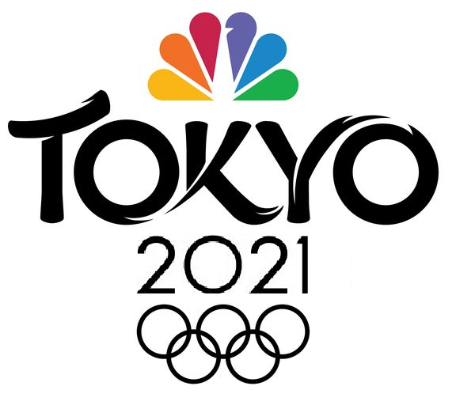

Tokyo olympics 2021: Who should you look out for?
by Archie Durham
With the 2021 Tokyo Olympics fast approaching, its highly anticipated beginning on Friday 23rd July is a date to remember. After being delayed by the recent pandemic, all the athletes are more than ready to compete for the gold medal, and we’re here to provide you with who to look out for as the excitement unfolds.
It would be an understatement to say that the USA typically does well in the Olympics. The Americans have topped the gold-medal table regularly, and have accumulated more medals than any other country, winning a whopping 2,828 medals (1,127 gold, 907 silver, 794 bronze) since the Olympics first started. It goes without saying their team looks strong enough to repeat this feat once again. Incredibly talented athletes, such as Simone Biles, who leads the gymnasts and is looking to add to her collection of 30 Olympic and World Championship medals, and esteemed basketballer Kevin Love, a five-time All-Star and one-time NBA championship winner who controversially made the cut over Julius Randle, are just some of the American athletes to look out for. With such an abundance of talent, make sure to watch this American team as they look to maintain their status on the top of the gold medal table.
Can Team GB finally step out of the shadow of the US to top the gold medal charts? Athletes such as Dina Asher-Smith will surely have a say in the matter. The prodigy is set to have a busy Games this year, being scheduled to run the 100m and 200m, as well as set to feature in the 4x100m team. The team is also strengthened by serial long-distance runner Laura Mir and women’s heptathlete Katrina Johnson-Thompson, returning to full fitness after some brief injuries. Despite finishing a respectable second on the gold and silver medal tables and third overall in the 2016 Rio Olympics, Team GB were once again unfortunately overshadowed by the success of the American team. Could this be the year this all changes?
With the BBC set to supply over 350 hours of coverage of the 2021 Tokyo Olympics, starting on Friday 23rd July and finishing on Sunday 8th August, make sure to tune in and look out for our favourites as they compete to become Olympic winners in a gripping battle!